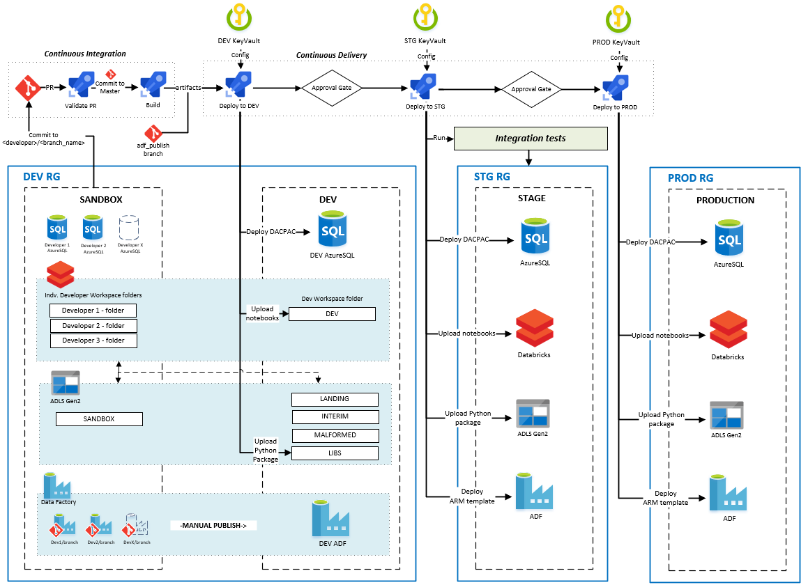

Data and DataOps Fundamentals¶
Most projects involve some type of data storage, data processing and data ops. For these projects, as with all projects, we follow the general guidelines laid out in other sections around security, testing, observability, CI/CD etc.
Goal¶
The goal of this section is to briefly describe how to apply the fundamentals to data heavy projects or portions of the project.
Isolation¶
Please be cautious of which isolation levels you are using. Even with a database that offers serializability, it is possible that within a transaction or connection you are leveraging a lower isolation level than the database offers. In particular, read uncommitted (or eventual consistency), can have a lot of unpredictable side effects and introduce bugs that are difficult to reason about. Eventually consistent systems should be treated as a last resort for achieving your scalability requirements; batching, sharding, and caching are all recommended solutions to increase your scalability. If none of these options are tenable, consider evaluating the "New SQL" databases like CockroachDB or TiDB, before leveraging an option that relies on eventual consistency.
There are other levels of isolation, outside the isolation levels mentioned in the link above. Some of these have nuances different from the 4 main levels, and can be difficult to compare. Snapshot Isolation, strict serializability, "read your own writes", monotonic reads, bounded staleness, causal consistency, and linearizability are all other terms you can look into to learn more on the subject.
Concurrency Control¶
Your systems should (almost) always leverage some form of concurrency control, to ensure correctness amongst competing requests and to prevent data races. The 2 forms of concurrency control are pessimistic and optimistic.
A pessimistic transaction involves a first request to "lock the data", and a second request to write the data. In between these requests, no other requests touching that data will succeed. See 2 Phase Locking (also often known as 2 Phase Commit) for more info.
The (more) recommended approach is optimistic concurrency, where a user can read the object at a specific version, and update the object if and only if it hasn't changed. This is typically done via the Etag Header.
A simple way to accomplish this on the database side is to increment a version number on each update. This can be done in a single executed statement as:
WARNING: the below will not work when using an isolation level at or lower than read uncommitted (eventual consistency).
-- Please treat this as pseudo code, and adjust as necessary.
UPDATE <table_name>
SET field1 = value1, ..., fieldN = valueN, version = $new_version
WHERE ID = $id AND version = $version
Data Tiering (Data Quality)¶
Develop a common understanding of the quality of your datasets so that everyone understands the quality of the data, and expected use cases and limitations.
A common data quality model is Bronze, Silver, Gold
- Bronze: This is a landing area for your raw datasets with none or minimal data transformations applied, and therefore are optimized for writes / ingestion. Treat these datasets as an immutable, append only store.
- Silver: These are cleansed, semi-processed datasets. These conform to a known schema and predefined data invariants and might have further data augmentation applied. These are typically used by data scientists.
- Gold: These are highly processed, highly read-optimized datasets primarily for consumption of business users. Typically, these are structured in your standard fact and dimension tables.
Divide your data lake into three major areas containing your Bronze, Silver and Gold datasets.
Note: Additional storage areas for malformed data, intermediate (sandbox) data, and libraries/packages/binaries are also useful when designing your storage organization.
Data Validation¶
Validate data early in your pipeline
- Add data validation between the Bronze and Silver datasets. By validating early in your pipeline, you can ensure all datasets conform to a specific schema and known data invariants. This can also potentially prevent data pipeline failures in case of unexpected changes to the input data.
- Data that does not pass this validation stage can be rerouted to a record store dedicated for malformed data for diagnostic purposes.
- It may be tempting to add validation prior to landing in the Bronze area of your data lake. This is generally not recommended. Bronze datasets are there to ensure you have as close of a copy of the source system data. This can be used to replay the data pipeline for both testing (i.e. testing data validation logic) and data recovery purposes (i.e. data corruption is introduced due to a bug in the data transformation code and thus the pipeline needs to be replayed).
Idempotent Data Pipelines¶
Make your data pipelines re-playable and idempotent
- Silver and Gold datasets can get corrupted due to a number of reasons such as unintended bugs, unexpected input data changes, and more. By making data pipelines re-playable and idempotent, you can recover from this state through deployment of code fixes, and re-playing the data pipelines.
- Idempotency also ensures data-duplication is mitigated when replaying your data pipelines.
Testing¶
Ensure data transformation code is testable
- Abstracting away data transformation code from data access code is key to ensuring unit tests can be written against data transformation logic. An example of this is moving transformation code from notebooks into packages.
- While it is possible to run tests against notebooks, by extracting the code into packages, you increase the developer productivity by increasing the speed of the feedback cycle.
CI/CD, Source Control and Code Reviews¶
- All artifacts needed to build the data pipeline from scratch should be in source control. This included infrastructure-as-code artifacts, database objects (schema definitions, functions, stored procedures etc.), reference/application data, data pipeline definitions and data validation and transformation logic.
- Any new artifacts (code) introduced to the repository should be code reviewed, both automatically (linting, credential scanning etc.) and peer reviewed.
- There should be a safe, repeatable process (CI/CD) to move the changes through dev, test and finally production.
Security and Configuration¶
- Maintain a central, secure location for sensitive configuration such as database connection strings that can be accessed by the appropriate services within the specific environment.
- On Azure this is typically solved through securing secrets in a Key Vault per environment, then having the relevant services query KeyVault for the configuration
Observability¶
Monitor infrastructure, pipelines and data
- A proper monitoring solution should be in-place to ensure failures are identified, diagnosed and addressed in a timely manner. Aside from the base infrastructure and pipeline runs, data should also be monitored. A common area that should have data monitoring is the malformed record store.
End to End and Azure Technology Samples¶
The DataOps for the Modern Data Warehouse repo contains both end-to-end and technology specific samples on how to implement DataOps on Azure.
 Image: CI/CD for Data pipelines on Azure - from DataOps for the Modern Data Warehouse repo
{kind=link}